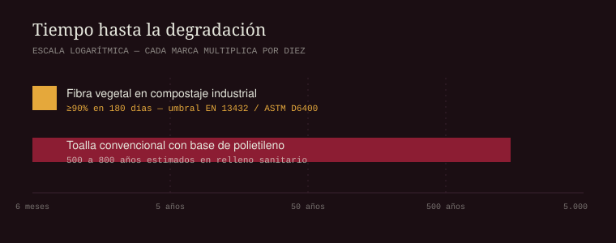

El dato circula en cada publicación sobre menstruación sostenible: una toalla sanitaria convencional es noventa por ciento plástico. Se repite tanto que ya casi nadie pregunta de dónde salió. Vale la pena preguntarlo, porque la respuesta dice bastante sobre cómo funciona esta industria.
La cifra aparece en literatura revisada por pares. Un análisis de ciclo de vida publicado en Environmental Science and Pollution Research en 2025, que comparó una toalla de pulpa de bambú con una convencional, parte de la premisa de que la mayoría de las toallas desechables se componen de plásticos y pulpa de madera blanqueada, y que esa combinación puede representar hasta el noventa por ciento de su peso.[1] Una revisión sobre fibras biodegradables publicada en 2025 describe la misma arquitectura: la lámina de barrera exterior es un polímero impermeable, similar al polietileno, resistente a la degradación bacteriana en los sistemas de alcantarillado.[2]
Lo que pasa cuando alguien desarma el paquete
Hay una forma más directa de averiguarlo: abrir las toallas y pesar las piezas. Eso hizo el equipo de Natracare con tres marcas —dos líderes de mercado y una de marca propia de supermercado—, separando manualmente los componentes plásticos y pesándolos en balanza de precisión. El promedio fue de 36 gramos de plástico por paquete: 2.4 gramos por toalla y otros 2.5 gramos en el envoltorio exterior, el equivalente aproximado a cinco bolsas de supermercado.[3]
Un cálculo independiente del Ashank Desai Centre for Policy Studies del IIT Bombay llega a un orden de magnitud parecido: contando alas, adhesivos, gel superabsorbente y empaque, cada toalla contiene alrededor de dos gramos de plástico no biodegradable, cerca de cuatro bolsas por paquete.[4]
Un ejercicio de verificación periodística europeo concluyó que la cifra del noventa por ciento es, en rigor, imposible de comprobar de forma independiente. No porque sea falsa, sino porque a nivel europeo los fabricantes de toallas sanitarias no están obligados a divulgar la lista exhaustiva de sus componentes, y mucho menos sus proporciones. Cuando en 2016 se consultó a la Comisión Europea sobre el tema, la respuesta fue que, al no haberse identificado riesgo para la salud en los estudios disponibles, no podía exigirse a los fabricantes hacer públicos sus ingredientes.[5]
Es decir: el dato que todas las marcas ecológicas usan como argumento de venta no puede auditarse, porque la industria convencional no publica los números. Ese vacío regulatorio es, en sí mismo, el argumento más fuerte.
La escala: de gramos a siglos
Dos gramos no impresionan a nadie. El problema aparece al multiplicar. Se estima que una persona puede usar del orden de diez mil toallas entre la menarquia y la menopausia, y que cada unidad tarda entre quinientos y ochocientos años en descomponerse en un relleno sanitario.[4] La revisión de fibras biodegradables de 2025 usa una cifra equivalente: hasta cinco siglos.[2] A eso se suma la huella de fabricación, estimada en unos diez gramos de gases de efecto invernadero por toalla producida.[2]

Cada mes menstrúan más de dos mil millones de personas en el mundo. La aritmética se resuelve sola.[6]
Dónde está exactamente el plástico
No es una sola pieza. Está repartido en casi toda la estructura:
- La lámina superior. Lo que muchas marcas llaman «capa de tela» suele ser una lámina plástica perforada, no un textil.[4]
- El núcleo absorbente. Combina pulpa de madera con polímeros superabsorbentes, que son plástico en forma de gel.[2]
- La base impermeable. Polietileno o similar. Es la pieza que garantiza que no traspase, y también la que resiste la degradación biológica.[2]
- Alas, adhesivos y envoltorio. Cada envoltorio individual es una unidad más de plástico de un solo uso.[4]
Vale la pena señalar algo que casi nunca se menciona: en el Reino Unido las toallas y tampones ni siquiera están clasificados como dispositivos médicos ni se venden estériles, de modo que buena parte de ese envoltorio individual no cumple una función sanitaria real.[7]
Qué cambia al sustituir la base
La pieza más estudiada como punto de sustitución es la lámina impermeable. Un análisis de ciclo de vida publicado en 2025 evaluó específicamente reemplazar el polietileno por ácido poliláctico —el PLA que se obtiene de almidón de maíz— en toallas sanitarias.[8] Es la misma decisión de diseño que tomamos en Aura, y la razón es simple: es la capa que más pesa en la persistencia del residuo y la que tiene un sustituto vegetal técnicamente maduro.
El rendimiento no se desploma al hacerlo. Un ensayo que midió retención de líquido bajo carga de un kilogramo encontró que una toalla comercial de tamaño mediano retenía 33.50 gramos frente a 31.97 gramos de una biodegradable equivalente.[2] Hay diferencia, y sería deshonesto negarla, pero está lejos del abismo que sugiere el mercadeo de las marcas convencionales.
Qué conviene exigirle a una marca
Si una marca dice ser libre de plástico, la pregunta útil no es cuánto plástico tienen las demás. Es cuál es su propia lista de materiales, capa por capa, con proporciones. Esa información no está obligada a darla nadie[5], y precisamente por eso separa a quien tiene la ficha técnica en la mano de quien solo tiene una historia.
Referencias
- Chen, Y. et al. Toward eco-friendly menstrual products: a comparative life cycle assessment of sanitary pads made from bamboo pulp vs. a conventional one. Environmental Science and Pollution Research, 2025. link.springer.com/article/10.1007/s11356-025-36269-8
- Exploring biodegradable fibers as sustainable alternatives for sanitary napkin: A comprehensive review. Environmental Development / ScienceDirect, 2025. sciencedirect.com/science/article/pii/S2352186425007217
- Natracare. How Much Plastic is in Period Pads? Estudio de composición sobre tres marcas comerciales. natracare.com/blog/how-much-plastic-in-period-pads
- Ashank Desai Centre for Policy Studies, IIT Bombay. Disposable Sanitary Napkins: A Case of Single Use Plastic? cps.iitb.ac.in
- EU FactCheck. Uncheckable: «Conventional menstrual pads are made up of 90% plastic materials». eufactcheck.eu
- ONU Mujeres. Pobreza asociada a la menstruación: por qué millones de niñas y mujeres no pueden permitirse los productos menstruales. unwomen.org
- Friends of the Earth. Plastic periods: menstrual products and plastic pollution. friendsoftheearth.uk
- Evaluation of the substitution of polyethylene for polylactic acid in sanitary pads through life cycle assessment. IOPscience, 2025. iopscience.iop.org/article/10.1088/2977-3504/adbdd2
- Verma, A. y Sambyal, S. Citado en Ashank Desai Centre for Policy Studies, IIT Bombay, 2018.
- Parthasarathy, P. et al. Estimación de emisiones por unidad producida, citada en la revisión de fibras biodegradables, 2022.
- Jeyakanthan, L. et al. Ensayos de retención de líquido en toallas comerciales y biodegradables, 2023. Citado en la revisión de ScienceDirect, ref. 2.